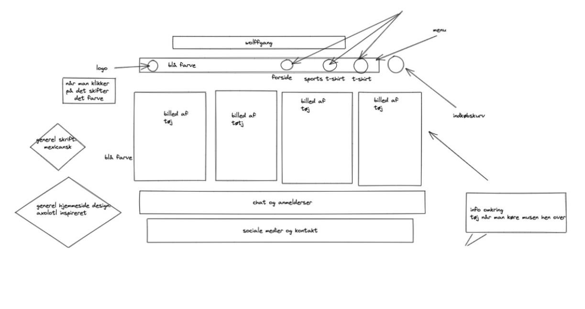

T2
T2
Løsning
Beskrivelse
I opgaven “Løsning” var det målet at lave en side med tøj og finde fotostilarter. Observation: Man holder øje med en situation eller objekt og notér interaktionerne og hændelserne, der udspiller sig. Interview: Målet er at samle baggrundsviden og fakta omkring den interviewede person, så man kan stille de rigtige spørgsmål og få et nuanceret svar. Survey: metode til indsamling af viden om et bestemt emne på en gang. Jeg valgte observations metoden, og interviewede samme person. Personen klikkede rundt på en hjemmeside for at købe tøj. Jeg lavede en prototype 1 udfra UI kits i adobe XD. Struktur og navigation i sitet linkede til 4 andre sider. Moodboardet og styletilet blev lavet ud fra ide og struktur til mit shopconcept. Dernæst brugte jeg det til at finde min fotostil som blev udarbejdet i fotoshop. Jeg brugte copy og microcopy til at finde ud af, hvordan teksten bygges. Ud af dette arbejde opstod prototype 2, der eventuelt blev den færdige side, der skulle observeres, og som tilsidst mundede ud i en pitch til at løse den efterfølgende opgave.
Process
Heat map. Populære idéer HARAKIRI. Jeg kan godt lide billedopsætningen under menuen, og over der, hvor der står shop
Speed critique. HER CHOICE. Dette er en beskrivelse af motiv og kunstner
DIT DESIGN. Sko guide pop up
HARAKIRI. Billedet under menuen.
EVERYDAY.DK Farve valg til t-shirt
Din solutionsketch / papirs-prototype Solution sketch 2 eller en papirs-prototype.
Prototype
Første udgave
Videreudvikling af første udgave

Jeg lavede en prototype 1 udfra UI kits i adobe XD. Struktur og navigation linkede til 4 andre sider.
Det hele udmundede i en prototype 2, der eventuelt blev den færdige side,
Moodboard og styletile
Valg af tekst fonte og farver

Inspiration til udvælgelse af billeder og eller tekst

Moodboardet og styletilet blev lavet ud fra ide og struktur til mit shopconcept.
Copy
En kort tekst, der gerne skulle fange folk
Min copy "Velkommen til Wolffgang - vi bestræber os på at være bæredygtige"
Microcopy
En længere tekst på en landingpage, der forklarer mere omkring virksomheden end hvad copien gør
Fotostil
Min fotostil fandt jeg på nettet ved at kopiere billeder fra nettet og ligge det over i et pages document.
Fotostil til din webshop

Jeg udførte desktop-research for at få inspiration til en hjemmeside.
Jeg interviewede en person og udførte test på personen.
Jeg brugte exildraw til at sketche min hjemmeside.
Jeg blev inspireret af axolotlens udseende og farve og brugte inspirationen til tøjet og hjenmesiden.
Hjemmesiden handler om tøj.
Jeg fandt også billeder på hjemmesiden sqoosh.
Jeg lavede mit moodboard, styletile og generel hjemmeside layout i XD.
Pitch
Beskrivelse
I opgaven “pitch” var det målet at fremlægge “Løsning”. Min rolle var mundtlig fremlæggelse, og jeg anvendte Powerpoint. Det var vigtig for mig at prøve at fremlægge, da jeg fysisk har store udfordringer i formidlingen.
Process
1. Forside
Viser indholdet i pitchen
Webshop titel
Wolfgang
Link til prototype
Prototype
UX-designer
Mig selv
Illustration?
2. UX-research hoved:
User experience er erfaring man får ved at klikkede rundt på hjemmesider
3. Anslag
En hjemmeside med bæredygtige t-shirt
4. Status
Mangler info omkring tøjet
Den er mere organiseret
Der er en mere fokuseret stil
5. Udfordring
At hjemmeside prototypen lever op til den skitserede.
6. Informationer og indsigter fra researchen
Ifølge Danmarks Naturfredningsforening er konventionel bomuld fyldt med sprøjtegift og indeholder giftige farvestoffer, som kan optages igennem huden.
7. UX/UI-design krop: løsning - ide (koncept og kreativ idé) og XD-prototype
UI, user interface, er designet på hjemmesiden
8. Webshop
Personer, der gerne vil ud med et budskab (eventuelt humoristisk)(Organisationer)
9. Produkter
T-shirts
Målgruppe
10. USP (unique selling point)/ salgsargument
Bestræber os på at sælge t-shirts af unik kvalitet
11. Produktegenskaber og fordele for kunder
Bomuld
Økologisk
Bæredygtig
Designproces: skitse, moodboard, style tile
Gennemgang af XD-prototypen
Uddybning af visuelt indhold og copy
Jeg har valgt at designe siden efter et dyr, der hedder axolotl.
Dyret kan findes i forskellige farver, brun, sort, albino, men den mest udbredte farve lyserød. Den kan hele sine egne lemmer og undgår at ændre form.
Velkommen til Wolffgang. Vi bestræber os på at være bæredygtige. Afspejlet i axolotlen, hvis habitat er truet.
12. 3.UX-test hale:
UX, user experience test, t test af personen ved at give opgaver
13. Konklusion og perspektiver.
Jeg skal blive bedre til at holde mig til min skitse.
14. Test (refleksion over tænke-højt-test).
The Five Act interview.
Friendly welcome.
Hej test-person, jeg takker dig for at deltage i den her test. Du skal bare vide, at jeg tester ikke dig, men mit design af hjemmeside.
Context questions Hvor gammel er du? Hvor bor du? Hvad har du af interesse? Hvad går du med af tøj? Går du op i bæredygtighed? Hvordan foretrækker du at shoppe?
15.Fremtidsperspektiver?
Få inkorporeret dyrets egenskaber og udseende i selve produktet.
Pitchen består af min løsning
Jeg brugte Power-Point til at lave min pitch